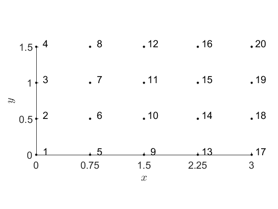
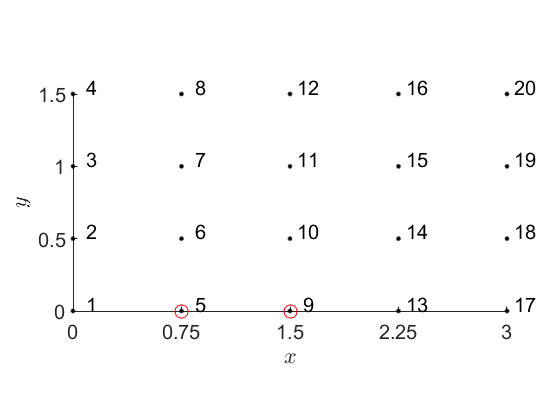
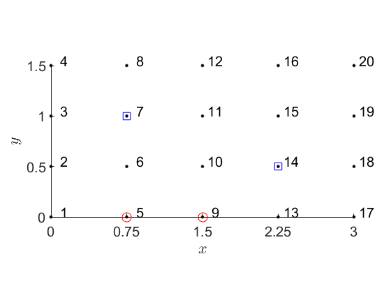
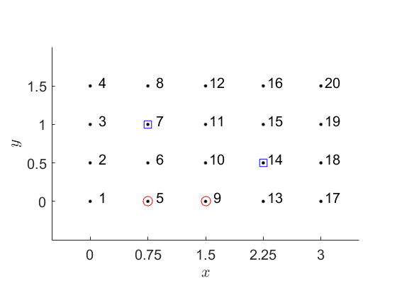

Illustrates grid manipulation
Contents
clear FDLabFolders
Grid data
x = linspace(0, 3, 5); y = linspace(0, 1.5, 4); southernLimits = [0.5, 2.0];
marker = {'MarkerSize', 10};
offset = 0.05;
interpreter = {'Interpreter', 'latex'};
Create grid
xygrid = FDGrid(x, y) %#ok<NOPTS>
xygrid =
X: [4x5 double]
Y: [4x5 double]
Indices: [4x5 double]
Display and label
clf, hold on plot(xygrid.X, xygrid.Y, 'k.', marker{:}), hold on text(xygrid.X(:) + offset, xygrid.Y(:) + offset, ... num2str(xygrid.Indices(:)), 'FontSize', FontSize) set(gca, 'XTick', x, 'YTick', y, 'FontSize', FontSize) xlabel('$x$', interpreter{:}) ylabel('$y$', interpreter{:}) axis equal, axis tight
Locate points in an interval on the south boundary
mask = xygrid.Y == y(1) & ... southernLimits(1) <= xygrid.X & xygrid.X <= southernLimits(2); plot(xygrid.X(mask), xygrid.Y(mask), 'ro', marker{:})
Locate points nearst arbitrary targets
Coordinates of target points
xTargets = [0.5, 2.0]; yTargets = [1.0, 0.5];
Indices of target points
indices = interp2( ... xygrid.X, xygrid.Y, xygrid.Indices, ... xTargets, yTargets, 'nearest');
plot(xygrid.X(indices), xygrid.Y(indices), 'bs', marker{:})
 Save image to file
margin = 0.5; axis([x(1) - margin, x(end) + margin, y(1) - margin, y(end) + margin]) print('-dpng', 'simple-domain.png')